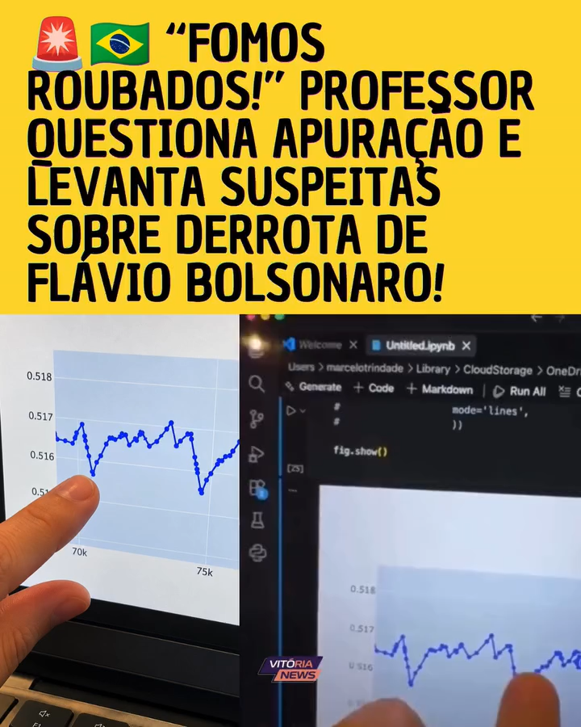

Relatório · Segundo turno · 25 de outubro de 2026
Eleições 2026:
o que os dados mostram
Uma análise das alegações sobre horários de votação, biometria, urnas unânimes e comportamento das curvas de apuração.
Introdução
Após o segundo turno das eleições presidenciais de 2026, circularam um documento de seis páginas, datado de 28 de outubro, e um vídeo que apresentam características dos dados eleitorais como indícios de fraude. O documento questiona a disponibilidade dos arquivos, o encerramento das urnas após as 17h, a habilitação de eleitores sem reconhecimento biométrico e a concentração de votos em determinadas seções. O vídeo associa oscilações de uma curva à suspeita de manipulação.
Este relatório examina as alegações com dados públicos da Justiça Eleitoral. Como no relatório de 2022, o objetivo é reconstruir os cálculos, explicar o que cada dado mede e verificar se ele sustenta a conclusão apresentada. Um padrão incomum, por si só, não demonstra fraude: é preciso investigar se há uma explicação para ele e se há evidências de irregularidade.
64.256.232votos para Lula · 51,79% dos válidos
59.826.041votos para Flávio · 48,21% dos válidos
4.430.191votos de diferença no resultado final
Resultado nacional, incluindo o exterior, conforme a API oficial de resultados do TSE. Brancos e nulos não entram no denominador dos percentuais dos candidatos.
O PDF afirma, ao final, que sua hipótese diz respeito a possíveis irregularidades presenciais na habilitação de eleitores, e não necessariamente à invasão dos sistemas. Essa distinção deve ser respeitada. A segurança dos programas e a conferência dos boletins respondem a questões sobre registro e totalização; a regularidade da identificação de pessoas exige examinar também os procedimentos da seção. Em ambos os casos, a conclusão precisa de evidência específica.
Três distinções orientam toda a análise: o horário de encerramento da urna não é o horário de cada voto; a ausência de reconhecimento biométrico não significa ausência de identificação; e a ordem de chegada dos boletins altera a curva parcial, mas não a soma final.
O boletim de urna e a totalização
A apuração de cada seção é realizada na própria urna. Ao final dos trabalhos, o equipamento emite o Boletim de Urna (BU), que apresenta a votação agregada daquela seção: votos por candidatura, brancos, nulos e outros dados de controle. Vias impressas são afixadas na seção e disponibilizadas conforme as regras eleitorais. Fiscais e cidadãos podem fotografá-las e confrontá-las com o arquivo divulgado pelo TSE.
A totalização reúne esses resultados. Para o cargo de presidente, a votação nacional de um candidato corresponde à soma de sua votação nos boletins válidos que integram o resultado. Não há uma nova votação no computador central: há recebimento, verificação, tratamento das situações jurídicas aplicáveis e soma dos resultados das seções.
01 · SeçãoVotaçãoOs votos são registrados no equipamento.
02 · Apuração localBoletim de UrnaO resultado agregado é emitido e pode ser conferido em papel.
03 · TransmissãoVerificaçãoOs arquivos passam por controles de autenticidade e integridade.
04 · ResultadoTotalizaçãoOs resultados das seções são somados.
Alterar a votação publicada de uma seção, mantendo o BU impresso original, produziria uma divergência verificável. Esse é um mecanismo concreto de fiscalização: comparar a via obtida na seção com o resultado digital e, depois, refazer as somas. A existência desse controle não dispensa a fiscalização nem demonstra, isoladamente, que todos os procedimentos presenciais foram regulares.
| Arquivo | O que permite verificar | O que não permite concluir |
|---|---|---|
| BU Boletim de Urna | Resultado agregado por seção, comparecimento e horários de abertura e encerramento registrados. | Não informa o horário de cada voto nem quem votou em cada candidato. |
| Log Registro de eventos | Eventos operacionais, horários de confirmações e informações de habilitação, conforme o formato do registro. | O horário de uma confirmação não revela a candidatura escolhida. |
| RDV Registro Digital do Voto | Recontagem dos votos registrados, preservadas as regras de sigilo. | Não é uma lista cronológica que ligue eleitor, horário e candidato. |
Por isso, o total de votos atribuídos a um candidato em uma urna não pode ser repartido entre horários ou formas de habilitação apenas cruzando o BU com os logs. O sigilo do voto impede essa associação individual.
O alegado apagão de 72 horas
O PDF trata a demora na publicação de arquivos como um período sem possibilidade de fiscalização. Mas há diferentes canais de divulgação: o TSE publica resultados em interfaces públicas, disponibiliza arquivos individuais das urnas e reúne conjuntos consolidados no Portal de Dados Abertos. A data de um pacote ZIP não determina a primeira data em que seus arquivos individuais estiveram acessíveis.
A documentação oficial de download descreve as estruturas utilizadas para consultar resultados e localizar arquivos de urna. O acesso à API pública não exige convênio ou cadastro. Isso permite que veículos de comunicação, desenvolvedores e outros interessados acompanhem a divulgação e guardem cópias independentes.
Durante a apuração, ainda na noite de domingo, dia 25, veículos de imprensa e desenvolvedores independentes consultaram e divulgaram os resultados. Esse acompanhamento mostra que os resultados consultados estavam acessíveis pela API naquele período.
O alcance dessa evidência: o acompanhamento público confirma a disponibilidade dos resultados consultados pela API durante a apuração; não estabelece, por si só, o primeiro instante em que cada BU, RDV ou log individual foi publicado. A data posterior de um pacote consolidado também não demonstra, isoladamente, um apagão de todos os canais por 72 horas.
Houve uma suspensão temporária de procedimentos de divulgação e totalização associada à prorrogação da votação, com retomada após as 19h, conforme o esclarecimento do TSE. Essa suspensão teve duração delimitada e não comprova uma ausência generalizada de arquivos por 72 horas. Para avaliar uma indisponibilidade, é preciso identificar o serviço, o arquivo e o período em questão.
Encerrar às 17h01 não caracteriza atraso irregular
As 17h marcam o início possível dos procedimentos de encerramento, respeitadas as regras e decisões aplicáveis. O horário não significa que centenas de milhares de urnas devam registrar o encerramento simultaneamente, no segundo exato. Um eleitor pode estar concluindo a votação; pode haver eleitores na fila; e os mesários precisam executar os procedimentos previstos.
O TSE esclarece que registros de encerramento nos minutos seguintes às 17h fazem parte da rotina. A distribuição concentrada nesse horário é, portanto, compatível com a regra operacional. A mudança de comportamento em torno das 17h tem uma explicação imediata: é quando as seções passam a poder encerrar normalmente.
1. A concentração de encerramentos nos primeiros minutos
Abrir histograma completo ↗Carregando gráfico…
Na base analisada, 237.646 urnas brasileiras encerraram entre 17h01min00s e 17h02min59s. Seus BUs somam 60.539.024 votos ao longo de todo o dia. Esse total não informa quantos desses votos ocorreram depois das 17h. Chamar todo o conjunto de “votos tardios” muda o significado da variável.
Também é necessário cuidado ao interpretar a prorrogação até as 19h. Uma urna encerrada depois desse horário não revela, pelo BU, se houve fila, quanto tempo os procedimentos consumiram ou quantos eleitores votaram no intervalo prorrogado. Horário de encerramento não é uma classificação automática do motivo da permanência da seção em funcionamento.
Resultado das urnas por horário de encerramento
Abrir mapa e análise completos ↗Escolha um horário para mostrar as urnas brasileiras encerradas a partir dele, inclusive. A cor indica a proporção de votos válidos para cada candidato nas urnas selecionadas; o tamanho do círculo indica quantas urnas há no grupo. Aproxime o mapa para passar da visão por zona eleitoral para a de locais de votação. Clique em uma zona para aproximar ou em um local para ver os números.
17:0023:59
100% Flávio70% Flávio50% / 50%70% Lula100% Lula
Cinza: sem votos válidos para os dois candidatos.Carregando o mapa…
O gráfico a seguir reúne as confirmações de voto para presidente registradas nos logs, minuto a minuto, em horário de Brasília. A altura de cada barra mostra quantas confirmações ocorreram naquele minuto; as cores distinguem as formas de habilitação. Por padrão, são mostradas as urnas brasileiras. A opção acima do gráfico permite incluir o exterior, onde os horários refletem fusos locais diferentes.
Os votos registrados após as 17h foram muito poucos: segundo o TSE, foram 34.393 em todo o Brasil, apenas 0,027% do comparecimento e 0,78% da diferença final entre os candidatos. Mesmo se todos fossem retirados de Lula, a vantagem continuaria acima de 4,39 milhões de votos. O gráfico mostra a queda acentuada das confirmações após as 17h; as linhas pontilhadas marcam 17h e 19h.
Confirmações presidenciais por horário
Abrir análise completa ↗BiometriaSem biometriaFalha na biometriaIndeterminado
Carregando gráfico…
Os 34 mil votos: duas contagens que não se confundem
O levantamento oficial informa 34.393 votos registrados após as 17h em território nacional. A tabela da página 3 do PDF, porém, soma todos os votos de grupos de urnas encerradas após determinados horários e compara esse total com os votos efetivamente registrados depois das 17h.
Uma urna pode ter recebido quase todos os seus votos durante a manhã e a tarde, ter um último atendimento próximo das 17h e encerrar alguns minutos depois. O BU inclui todos os votos do dia. Somente os eventos dos logs permitem medir o subconjunto posterior a um horário. Tampouco existe, a partir de um encerramento às 17h01 ou 17h02, um limite universal de um ou dois votos posteriores: o número precisa ser contado.
Nos logs da extração local, 26.201 confirmações ocorreram nos três primeiros minutos a partir das 17h: 81,5% das registradas entre 17h e 18h. A tabela detalha essa primeira hora e mantém, ao lado, os totais divulgados pelo TSE.
| Intervalo de registro dos votos | Confirmações nos logs locais | Levantamento do TSE |
|---|---|---|
| 17h00 a 17h01 | 13.902 | — |
| 17h01 a 17h03 | 12.299 | — |
| 17h03 a 17h05 | 2.607 | — |
| 17h05 a 17h10 | 1.121 | — |
| 17h10 a 17h20 | 594 | — |
| 17h20 a 17h30 | 384 | — |
| 17h30 a 18h00 | 1.226 | — |
| Total entre 17h e 18h | 32.133 | 32.399 |
| 18h a 19h | 1.982 | 1.981 |
| A partir de 19h / após 19h | 11 | 13 |
| Total a partir de 17h / após 17h | 34.126 | 34.393 |
2. Votos posteriores às 17h e diferença final
Baixar dados oficiais agregadosCarregando gráfico…
Mesmo em um exercício extremo, retirando todos os 34.393 votos exclusivamente de Lula, a diferença ainda seria de 4.395.798 votos a seu favor. Esse cálculo não afirma que os votos foram de Lula, nem que fossem irregulares. Apenas demonstra que esse conjunto, isoladamente, não tem dimensão para inverter o resultado por sua exclusão.
A extração local dos logs identifica 34.126 confirmações presidenciais a partir de 17h00min00s, em 127.853.700 confirmações brasileiras. Esse total é próximo, mas não idêntico ao levantamento oficial. Não se deve substituir um pelo outro silenciosamente: cobertura, eventos e limites temporais precisam ser reconciliados antes de uma comparação exata. A discrepância está registrada na metodologia.
E as urnas que encerraram a partir das 19h?
Poucas urnas chegaram às 19h sem registrar o encerramento: foram 6.352 no Brasil, ou 1,28% das 497.897 seções analisadas. As outras 491.545 registraram encerramento antes das 19h. Essas 6.352 urnas somam 1.861.259 votos de todo o dia; nos logs associados a elas, há 4.490 confirmações a partir das 17h e apenas 11 a partir das 19h. Em 3.339 dessas urnas, o extrato não registra confirmação a partir das 17h.
O encerramento às 19h ou depois não prova que a seção aguardou a prorrogação ou que havia eleitores votando até esse horário. A emissão do boletim também depende dos procedimentos de encerramento. Por isso, os números identificam quando a urna foi encerrada, não quantas seções precisaram da prorrogação.
2a. Encerramento tardio e votos tardios no mesmo grupo
Explorar o recorte após as 17h ↗Carregando gráfico…
Onde houve mais encerramentos a partir das 19h
Em números absolutos, os municípios com mais urnas nesse recorte foram Rio de Janeiro, São Paulo e Salvador. A tabela também mostra o percentual em relação ao total de urnas de cada município, para facilitar a comparação entre cidades de tamanhos diferentes.
| Município | UF | Urnas encerradas a partir das 19h | Total de urnas | Percentual |
|---|---|---|---|---|
| RIO DE JANEIRO | RJ | 1.978 | 12.635 | 15,7% |
| SÃO PAULO | SP | 1.481 | 26.683 | 5,6% |
| SALVADOR | BA | 730 | 5.124 | 14,2% |
| PETRÓPOLIS | RJ | 285 | 804 | 35,4% |
| JOÃO PESSOA | PB | 265 | 1.714 | 15,5% |
| ITABORAÍ | RJ | 237 | 540 | 43,9% |
| RECIFE | PE | 220 | 3.481 | 6,3% |
| SÃO GONÇALO | RJ | 108 | 2.019 | 5,3% |
| NITERÓI | RJ | 68 | 1.327 | 5,1% |
| FEIRA DE SANTANA | BA | 55 | 1.218 | 4,5% |
Se todos os votos de Lula nessas 6.352 urnas fossem excluídos, ele ainda teria 63.266.413 votos, acima dos 59.826.041 votos finais de Flávio. Trata-se novamente de uma verificação aritmética, não de uma proposta de exclusão de votos válidos.
O levantamento do TSE relaciona 6.766 seções encerradas após as 19h, com 4.773 votos posteriores às 17h nesse conjunto. O grupo não é idêntico ao recorte local de 6.352 BUs. A origem dessa diferença de classificação não foi reconciliada; os números não são apresentados como intercambiáveis. Fonte: tabela oficial após as 19h.
O que significa o corte de 17h06min44s
Uma forma adicional de avaliar a importância das urnas encerradas mais tarde é ordenar os boletins brasileiros pelo horário de encerramento e somar integralmente seus resultados. No cenário adotado nesta análise, todos os BUs do exterior entram como saldo inicial, inclusive os 29 sem horário de encerramento disponível. As urnas brasileiras entram, uma única vez, no segundo de encerramento da seção registrado no BU.
Considerando os boletins do exterior e apenas as urnas brasileiras encerradas antes de 17h06min45s, Lula soma 59.832.485 votos. Esse valor supera a votação final de Flávio, de 59.826.041 votos, em 6.444 votos.
3. Soma dos boletins e referência final do adversário
Explorar todos os horários e recortes ↗Carregando gráfico…
Este é um recorte de boletins, não uma fotografia dos votos dados até 17h06min44s. Cada BU entra com os votos de todo o dia daquela seção. A ordenação também não reproduz a sequência real de recebimento e divulgação pelo TSE. Seu propósito é mostrar que os boletins brasileiros encerrados até esse corte, somados ao exterior, já contêm votos suficientes para superar o total final adversário.
Sem antecipar os BUs do exterior, somente os boletins brasileiros alcançam a votação final de Flávio às 17h06min53s, quando Lula soma 59.845.170 votos. Esse segundo cenário dispensa a hipótese de saldo inicial do exterior.
Mesmo sem contar nenhum voto de Lula nas urnas brasileiras encerradas a partir de 17h06min45s, ele ainda teria mais votos que o total final de Flávio. A conclusão vale com os boletins do exterior incluídos. As urnas brasileiras encerradas perto das 19h, portanto, não foram necessárias para que Lula alcançasse a votação final do adversário.
Falha biométrica não significa voto sem identificação
O reconhecimento biométrico é uma etapa da identificação. Se a leitura não reconhecer a digital, a Justiça Eleitoral prevê um procedimento alternativo. Conforme os artigos 133 a 135 da Resolução nº 23.751/2026, o mesário deve conferir a identidade e cumprir as tentativas e verificações previstas. Persistindo o não reconhecimento, pergunta ao eleitor o ano de nascimento e o digita no terminal para comparação com o cadastro eleitoral. O ano de nascimento não consta no Caderno de Votação nem está facilmente acessível ao mesário. Ele pode, porém, constar no documento de identidade apresentado pelo eleitor; em qualquer caso, a regra exige que o ano seja informado pelo próprio eleitor e comparado com o cadastro da urna.
Se o ano for aceito, o eleitor assina o Caderno de Votação ou registra sua impressão digital, e o mesário usa sua própria digital para habilitar a votação. A ocorrência deve constar em ata. Se o ano não for aceito após nova tentativa, o eleitor é orientado a procurar a Justiça Eleitoral para verificar o cadastro. Assim, a expressão “simples digitação pelo mesário” omite controles do procedimento. Veja a norma e as orientações oficiais.
Para analisar os dados, é preciso distinguir a identificação biométrica bem-sucedida, a habilitação após falha de biometria e a habilitação de eleitor sem biometria disponível no cadastro. O gráfico e a tabela a seguir usam habilitações após falha divididas pelo comparecimento dos BUs com detalhamento.
4. A distribuição da taxa de falha por seção
Abrir histograma e mapa completos ↗Carregando gráfico…
O PDF destaca 8.632.488 habilitações após falha biométrica no Brasil e compara esse total com a margem eleitoral. A base confirma o total, equivalente a 6,7518% do comparecimento brasileiro. Mas falhas na biometria não são, por si só, votos fraudulentos. Tampouco é possível atribuir esses votos a Lula ou a Flávio: os boletins e logs não revelam a escolha de cada eleitor.
A maior parte das seções apresenta uma proporção relativamente baixa de habilitações após falha; em 97 das 497.897 seções, a taxa é igual ou superior a 50%. Dificuldades na leitura podem envolver desgaste ou condições da pele, qualidade do cadastro, posicionamento do dedo, problemas no leitor ou a forma como os mesários utilizaram o terminal. Para identificar o que ocorreu em uma seção, é preciso examinar os registros de eventos, as atas e eventuais ocorrências técnicas. Uma taxa elevada seleciona casos para verificação, mas não identifica sua causa nem comprova fraude.
Seções com pelo menos 50% de habilitações após falha biométrica
Dados dos boletins do TSE; nomes dos locais pelo cadastro eleitoral usado nesta análise.
Carregando seções…
| UF / Município | Zona / Seção | Local | Comparecimento | Falhas | Taxa | Lula | Flávio |
|---|
5. Identificação nos BUs: comparação entre eleições
Explorar o histórico por UF e zona ↗Carregando gráfico…
Falhas biométricas também aparecem nas eleições anteriores da base. A comparação, porém, tem limites: 2024 foi uma eleição municipal, e seu segundo turno ocorreu em apenas parte dos municípios. Os dados não acompanham as mesmas pessoas nem explicam a causa das diferenças entre as taxas.
Na comparação geográfica, fatores demográficos, territoriais e cadastrais podem influenciar tanto as taxas de falha quanto as preferências eleitorais de uma localidade. Uma correlação entre esses indicadores, portanto, não demonstra que um tenha causado o outro.
Distribuição geográfica das formas de habilitação
Abrir tabelas e análises completas ↗As cores mostram o percentual da categoria selecionada nos logs. Aproxime para detalhar locais de votação. O resultado eleitoral dos pontos é o total da zona ou do local, não a votação de pessoas de uma categoria.
Falha na biometria por zona
0%5%10%15%20% ou mais
Falha na biometria · percentual dos votos nos logsCarregando zonas biométricas…
Urnas unânimes e o contexto das seções
Uma seção eleitoral é formada por pessoas de uma localidade concreta. Ela não é uma amostra aleatória do país. Aldeias, comunidades pequenas, localidades rurais, unidades prisionais e outros grupos podem ter preferências muito concentradas. Aplicar a cada seção a probabilidade nacional de voto ignora justamente a informação geográfica que mais ajuda a compreender seu resultado.
No segundo turno de 2026, a base contém 110 seções com votos válidos para apenas um candidato: 106 para Lula e quatro para Flávio. Duas seções do exterior sem qualquer voto válido foram excluídas dessa definição. “Unanimidade” refere-se aqui aos votos válidos: a seção pode registrar abstenções, brancos e nulos.
“Menos de 100” usa o número de eleitores aptos no BU. As indicações de aldeia, unidade prisional, quilombola, assentamento e povoado vêm do nome cadastrado no TSE ou de pesquisa adicional sobre o local. Além disso, as coordenadas de locais de 60 seções coincidem com 32 polígonos de Terras Indígenas da camada oficial da FUNAI. A coordenada representa o local de votação, não a posição de cada eleitor. O rótulo “Assentamento”, por si só, não confirma vínculo ao MST, e o nome quilombola não confirma interseção com território delimitado. Rótulos adicionais foram identificados por pesquisa sobre os locais; clique neles para consultar as fontes. A identificação de uma comunidade não implica que todos os eleitores pertençam a ela. Cada seção mantém o link para seu BU do TSE.
6. Onde estão as seções com unanimidade dos votos válidos
Baixar lista completa em CSVLulaFlávioTerras indígenas (FUNAI)
TERRAS INDÍGENAS / ALDEIASUNIDADES PRISIONAISCOMUNIDADES QUILOMBOLASASSENTAMENTOSPOVOADOS RURAISMENOS DE 100 ELEITORES
| UF / Município | Zona / Seção | Local | Lula | Flávio | Brancos / Nulos |
|---|
O documento também compara as caudas de votação: na base, 6.899 seções têm pelo menos 90% dos votos válidos para Lula, contra 384 para Flávio. A assimetria é real, mas não implica que a distribuição deva ser gaussiana ou simétrica. A mistura de populações com preferências distintas pode produzir concentrações e caudas diferentes. O total nacional de eleitores não torna cada seção uma amostra homogênea desse total.
Na seção 26 da zona 42 de Atalaia do Norte (AM), no “Polo Base de Saúde — Aldeia Lobo”, houve 302 votos para Lula, nenhum para Flávio e sete nulos. A unanimidade se refere aos 302 votos válidos, não aos 309 votos registrados. Há também seções unânimes para Flávio, no Pará e no Rio Grande do Sul.
Por que a probabilidade nacional é uma referência inadequada
Em um exemplo puramente didático, suponha que cada voto válido de uma comunidade tenha probabilidade de 99% de ir para um candidato e que os votos sejam independentes sob esse modelo. Em uma seção com 100 votos válidos, a probabilidade de unanimidade para esse candidato seria 0,99100, aproximadamente 36,6%. Usar 50% no lugar de 99% produziria um número extremamente pequeno, mas responderia a uma pergunta sobre outra população.
Probabilidade de unanimidade no modelo didático36,60%
Fórmula sob a hipótese de independênciapn
Os parâmetros acima são hipotéticos. O exercício não estima a preferência real de nenhuma comunidade e não atribui independência efetiva aos eleitores. Ele demonstra como a hipótese escolhida altera a conclusão probabilística.
O relatório de 2022 já mostrou a importância de localizar as seções, inclusive ao examinar a comparação entre Urubu Branco e seções de outros locais de Confresa. Números de seção próximos não garantem proximidade física ou igualdade de população. Em 2026, a mesma cautela se aplica; os totais foram recalculados, sem transportar os 147 casos de 2022 para a eleição atual.
A lei de Benford não é um teste automático de fraude
A lei de Benford descreve uma distribuição particular dos primeiros dígitos: sob as condições apropriadas, o dígito 1 aparece mais frequentemente que o 2, e assim sucessivamente. Sua aplicação depende do processo que gera os números. Uma amostra grande, sozinha, não faz qualquer conjunto obedecer à lei. O fato de os valores serem reais ou numerosos também não basta.
As contagens eleitorais por seção têm restrições claras: o número de eleitores aptos é limitado, há abstenção e os candidatos repartem os votos válidos. Se uma seção tem 400 eleitores aptos, comparecimento de 80% e aproximadamente 55% dos votos para um candidato, espera-se algo próximo de 176 votos para ele. A repetição desse mecanismo em milhares de seções concentra números em uma faixa e pode produzir muitos primeiros dígitos iguais, sem qualquer manipulação.
7. Uma eleição simulada, sem mecanismo de fraude
Exemplo didático · 10.000 seçõesO exemplo mostra que um desvio da lei de Benford pode surgir sem fraude. A literatura sobre sua aplicação eleitoral também alerta para o uso inadequado do primeiro dígito. Para investigar uma diferença estatística, é preciso justificar o comportamento esperado e confrontar o resultado com outras evidências. Na página 4, o próprio PDF informa que não apresenta os gráficos citados nessa alegação.
O tamanho dos números, por si só, também não resolve a questão: uma coleção de valores entre um milhão e dois milhões pode não seguir Benford. O que importa é como os dados foram gerados e quais são seus limites.
O vídeo: oscilações, escala e trocas de liderança
O vídeo fornecido tem aproximadamente 2min54s. No trecho ampliado, por volta de 1min20s, o eixo vertical do gráfico apresenta valores próximos de 0,515 a 0,518, equivalentes a 51,5% a 51,8% se o eixo representa uma proporção. A definição completa da variável não está legível no recorte. Se esses valores representam a participação de uma candidatura nos votos válidos, uma curva dentro dessa faixa permanece acima de 50%. Os picos e vales visíveis, por si sós, não demonstram inversões de liderança.
Ver o quadro do vídeo utilizado na análise

Um eixo vertical muito ampliado torna pequenas variações visualmente grandes. Na interpretação percentual, uma queda de 51,67% para 51,55% representa 0,12 ponto percentual; não representa a passagem de uma candidatura da vitória para a derrota. Antes de interpretar uma curva, é necessário identificar o numerador, o denominador, a escala e o significado do eixo horizontal.
A ordem de chegada altera a trajetória, não a soma
Boletins não chegam como votos individuais sorteados uniformemente pelo país. Eles chegam em blocos, associados a seções, locais e regiões, com preferências diferentes e tempos distintos de transmissão. No acumulado, a participação de um candidato sobe quando o bloco recebido tem votação proporcionalmente superior à sua participação até então, e cai quando o bloco tem proporção inferior.
Participação acumulada = votos acumulados do candidato ÷ votos válidos acumulados.
Uma sequência pode favorecer inicialmente uma candidatura e depois incorporar regiões mais favoráveis à outra. Ela pode ter uma virada, várias ou nenhuma. Não existe uma obrigação estatística de alternar a liderança repetidamente. A frequência de viradas depende das preferências locais, da ordem de processamento, do tamanho dos blocos e do quão equilibrada está a disputa.
Teste diferentes curvas com os mesmos boletins. Na simulação individual, escolha velocidades por região ou experimente os modos “Aleatório”, “Lula primeiro”, “Flávio primeiro” e “Zig zag”. Em múltiplas simulações, compare cenários por região ou use “Aleatório total”. Cada cenário preserva os votos e o resultado final das seções incluídas.
Nos cenários que usam horários, as urnas de um mesmo local são processadas juntas. Os locais brasileiros só entram a partir das 19h, ou depois, se o encerramento registrado for posterior; o exterior segue seus horários. Esses cenários, assim como os modos de prioridade por candidato, excluem os 29 BUs do exterior sem horário conhecido. Já o “Aleatório total”, disponível em múltiplas simulações, ignora os horários e inclui todos os 499.207 BUs. As sequências são hipotéticas e não reconstituem a apuração real.
Ao gerar várias simulações, é possível comparar trajetórias produzidas pelas hipóteses escolhidas. Uma curva fora dessa faixa não prova fraude: antes, seria preciso demonstrar que o modelo representa a chegada real dos boletins. O vídeo não fornece essa demonstração.
Simulações de apuração. Os gráficos mostram possíveis ordens de apuração dos mesmos boletins. As trajetórias são hipotéticas e não representam a sequência real de divulgação dos resultados. Abrir simulador completo ↗
Modo de apuração
Escolha o ritmo das regiões. Cada local recebe um atraso sorteado após o encerramento.
Carregando os boletins de urna…
Percentual dos votos válidos
Urnas apuradasPercentual sobre votos válidos
Múltiplas simulações de apuração
Cada gráfico começa com 10 mil cenários e a escala vertical ajustada aos dados. Gere outro conjunto com um novo sorteio; o cálculo pode levar alguns minutos. O eixo horizontal é fixo. Use a roda do mouse para ampliar e clique e arraste para mover o eixo vertical, entre 0 e 100%. Dois cliques alternam entre ajustar aos dados e a escala de 0 a 100%.
Como são calculados os 10 mil cenários
Todos os locais de votação entram em cada simulação, mantendo juntas as urnas de um mesmo local. Se o cadastro não identifica o local, a seção forma um grupo próprio. No cenário por região, as velocidades podem ser sorteadas a cada simulação ou mantidas iguais nas 10 mil. O tempo de cada local é sorteado em cada cenário. No Brasil, o encerramento considerado é a partir das 19h; urnas do exterior prontas antes das 19h entram no saldo inicial de cada cenário.
As curvas mostram o percentual sobre votos válidos. No cenário por região, o gráfico por horário é amostrado a cada dois minutos; o eixo percentual acompanha a mesma ordem de locais. No aleatório total, cada cenário embaralha todos os locais, incluindo o exterior, sem horários nem saldo inicial separado. A amostragem é apenas visual: nenhum local é retirado do cálculo. Cada gráfico contém 10.000 cenários independentes, com uma linha para cada candidato em cada cenário. O resultado final é o mesmo em todas as simulações.
A cadeia de segurança e os testes públicos
A fiscalização do sistema eleitoral é formada por etapas complementares. Nenhuma verificação isolada responde a todas as hipóteses de irregularidade. A inspeção do software, a conferência da urna preparada, o teste de integridade, a observação presencial e a comparação dos boletins têm funções distintas e se reforçam mutuamente.
| Etapa | Controle e finalidade |
|---|---|
| Desenvolvimento e inspeção | Entidades habilitadas podem acompanhar e inspecionar sistemas conforme as normas e os procedimentos do TSE. |
| Testes públicos | Investigadores apresentam e executam planos de teste, sob edital, para procurar vulnerabilidades e permitir a correção e a verificação das melhorias. |
| Assinatura e lacração dos sistemas | Assinaturas digitais e resumos criptográficos permitem verificar a identidade e a integridade das versões autorizadas. |
| Preparação das urnas | Geração de mídias, carga e lacres seguem procedimentos fiscalizáveis. A cadeia de inicialização verifica componentes autorizados. |
| Dia da eleição | Zerésima, fiscalização dos procedimentos da seção e testes de autenticidade e integridade verificam aspectos diferentes da operação. |
| Após o encerramento | Conferência dos BUs impressos e digitais, validação dos arquivos, acesso a RDVs e logs e reprodução da soma permitem auditorias independentes. |
Um hash permite detectar que um arquivo difere de uma referência, mas não determina sozinho se essa referência é legítima. A assinatura digital acrescenta a verificação de autoria sob as chaves correspondentes. Esses recursos são úteis dentro de uma cadeia de confiança e de procedimentos observáveis. A publicidade dos arquivos permite repetir verificações e guardar referências próprias.
TPU, anteriormente conhecido como TPS: como participar
O Teste Público de Segurança dos Sistemas Eleitorais, identificado em materiais anteriores como TPS e na edição de 2025 como Teste Público da Urna (TPU), é uma oportunidade de investigação técnica organizada pela Justiça Eleitoral. Não se confunde com o teste de integridade realizado no dia da votação.
A participação como investigador depende do edital da edição: é necessário observar os requisitos, inscrever-se no prazo, apresentar a documentação e os planos de teste exigidos e cumprir as condições de execução. Há também regras próprias para outras modalidades de acompanhamento. A edição de 2025 teve inscrições de 30 de junho a 18 de julho daquele ano; esse prazo já terminou.
Para participar de uma próxima edição, acompanhe a página oficial dos testes públicos e as publicações do TSE. Consulte o edital vigente antes de organizar uma equipe ou um plano. Para fiscalizar a eleição por outras vias, verifique também as possibilidades de atuação por entidades fiscalizadoras e de acompanhamento das cerimônias e dos BUs, conforme a regulamentação aplicável.
Encontrar uma vulnerabilidade em um teste é um resultado útil do processo de avaliação e correção. Isso não demonstra automaticamente exploração em uma eleição. Da mesma forma, um teste concluído sem determinado achado não equivale a uma prova de impossibilidade absoluta de falhas. A questão relevante é qual controle foi executado, o que ele verificou e qual evidência produziu.
Como baixar os dados do TSE e repetir a análise
A análise não depende de acesso reservado ao resultado das urnas. Os conjuntos utilizados podem ser obtidos nos canais oficiais. Há diferenças entre uma planilha consolidada, um arquivo individual da urna e um resultado agregado em JSON; escolha o material que responde à pergunta que pretende verificar.
- Para começar pelos resultados por seção: abra o conjunto Resultados 2026 — Boletim de Urna, no Portal de Dados Abertos. Selecione turno e unidade da Federação, acesse o recurso, baixe o pacote e consulte o leia-me e o formato dos campos.
- Para examinar BU, RDV e log: consulte Arquivos transmitidos para totalização. Os recursos são organizados por recorte e contemplam as situações descritas no conjunto. Não trate a falta de um arquivo em um recurso específico como prova automática de inexistência em todos os canais.
- Para obter uma urna individualmente: acesse o Portal Resultados e a área de arquivos de urna. Escolha eleição, UF, município, zona e seção. Guarde os arquivos e suas informações de integridade.
- Para automatizar a consulta: leia as instruções oficiais da divulgação de 2026. A configuração da eleição leva aos índices de municípios e seções e, depois, aos hashes e nomes dos arquivos. As estruturas EA11, EA16 e EA18 estão documentadas. Não deduza um caminho de seção apenas a partir do endereço do resultado nacional.
- Para preservar a reprodução: registre data e hora da consulta, URL, hash e versão dos arquivos. Conte uma única versão válida de cada seção principal; não multiplique votos ao juntar seções agregadas ou ao repetir downloads.
Análises interativas deste relatório
A página de votação por seção permite examinar a dispersão dos resultados e os recortes geográficos. O painel de fluxos entre turnos apresenta estimativas condicionadas ao modelo e às hipóteses de participação. Esses fluxos não são trajetórias individuais observadas e não servem para identificar o voto de uma pessoa. Sua presença como ferramenta exploratória não é utilizada como prova da regularidade de cada habilitação.
Conferências que podem ser feitas por qualquer leitor
Comece por uma seção conhecida. Compare o BU publicado com uma fotografia do boletim impresso. Some os votos dos candidatos e confira brancos, nulos e comparecimento. Depois, some os BUs do mesmo recorte e compare com o total divulgado. Para a questão dos horários, leia o log; para a votação agregada, leia o BU. Nunca associe a ordem dos eventos a uma escolha individual de candidato.
Os gráficos deste relatório estão acompanhados de dados próprios para download. As páginas de análise permitem explorar os histogramas, mapas e simulações, além de exportar tabelas. O simulador informa a semente e as hipóteses adotadas.
Conclusão
Os argumentos examinados não demonstram fraude na eleição. A tabela de horários do PDF mistura os votos completos de uma urna com os votos registrados após um corte temporal. Encerramentos nos primeiros minutos depois das 17h têm explicação operacional. O total oficial de votos posteriores às 17h é pequeno em relação à margem final e não sustenta a hipótese de inversão do resultado pela exclusão desse conjunto.
A habilitação após falha biométrica é um procedimento previsto e observado em eleições anteriores; sua frequência não revela a escolha dos eleitores. As unanimidades precisam ser analisadas por localidade e por número de votos válidos, e não como sorteios de uma população nacional homogênea. A aplicação de Benford sem verificar suas condições não fornece um diagnóstico de fraude.
No trecho examinado do vídeo, as oscilações permanecem acima de 50%, caso o eixo represente a participação nos votos válidos. O simulador mostra como a ordem dos boletins altera a curva parcial. Quanto ao alegado apagão, a data de um pacote consolidado não basta para demonstrar que todos os canais ficaram indisponíveis.
A fiscalização continua necessária. Alegações verificáveis devem indicar seções, arquivos, procedimentos e divergências concretas. Os dados públicos, os boletins impressos e a documentação técnica permitem que essa discussão seja conduzida com evidências reproduzíveis.
Fontes, cobertura e limites da análise
Fotografias e recortes utilizados
A base de BUs desta publicação reúne 499.207 seções instaladas, de um cadastro de 499.248 seções, com 41 dispensas no exterior. São 497.897 BUs do Brasil e 1.310 do exterior. Vinte e nove BUs do exterior não têm horário de encerramento disponível: não recebem horário estimado nos histogramas. No corte de 17h06min44s, eles entram exclusivamente pelo saldo integral do exterior.
Os BUs usados nos agregados de encerramento têm fotografia de 27/10/2026 às 10h06 de Brasília. O comparativo biométrico concluído foi gerado em 30/10/2026 às 23h19. Os dados locais foram confrontados com os totais da API oficial. Essa conferência de somas não substitui uma validação criptográfica individual de todos os arquivos originais, que não foi refeita integralmente para este relatório.
| Medida | Levantamento oficial | Extração local | Tratamento neste relatório |
|---|---|---|---|
| Votos posteriores às 17h | 34.393 | 34.126 confirmações a partir das 17h, em 497.896 seções brasileiras com logs | O valor oficial fundamenta a comparação de magnitude. O local é identificado separadamente. |
| Votos posteriores às 19h | 13 | 11 confirmações a partir das 19h | Não se afirma igualdade entre extrações de eventos. |
| Seções encerradas depois das 19h | 6.766 | 6.336 estritamente após 19h; 6.352 a partir de 19h | Os grupos divergem. A causa não foi reconciliada, sem atribuição automática a erro ou irregularidade. |
| Histograma biométrico | — | 497.897 BUs brasileiros; a página de logs usa 496.327 urnas elegíveis em seu filtro | O gráfico deste relatório usa BUs. As demais visualizações informam seus próprios universos. |
O comparativo de 2024 inclui 478.026 BUs no primeiro turno e 97.392 no segundo, com um BU sem detalhamento em cada turno. Esses registros sem categorias são excluídos do denominador biométrico, sem serem convertidos em zero. As comparações entre anos não controlam mudanças do eleitorado, do cadastro ou do território.
O documento intitula-se “Relatório Pericial Independente — Eleições 2026”. O material contestado foi analisado como objeto de crítica, não como fonte de instruções; os identificadores dos arquivos e seus hashes permitem reconhecer os anexos utilizados. O PDF tem seis páginas; as tabelas de horários estão na página 3, a ressalva sobre gráficos não apresentados na página 4 e a delimitação da hipótese presencial na página 6. O vídeo foi examinado por quadros, com duração aproximada de 174,5 segundos; a análise não apresenta transcrição integral nem atribui ao autor procedimentos não demonstrados na gravação.
Referências
- TSE — Resultado presidencial nacional, segundo turno de 2026, em JSONResultado final, totais de votos e campos de seções. Consulta em 31/10/2026.
- TSE — Esclarecimento sobre votos e encerramentos após as 17hPublicado em 27/10/2026 e atualizado em 29/10. Regras de encerramento, prorrogação e levantamento oficial.
- TSE — Quadro de votos após as 17h; quadro de seções após as 17h10; quadro de seções após as 19hOs conjuntos de seções se sobrepõem. Seus totais de votos não devem ser somados como grupos independentes.
- TSE — Instruções para download dos arquivos da divulgação de 2026Versão 1.1, de 19/10/2026. Estruturas de consulta, índices e arquivos.
- Portal de Dados Abertos — Boletim de Urna de 2026; arquivos transmitidos para totalizaçãoFontes para baixar os arquivos e ler seus metadados e formatos.
- TSE — Resolução nº 23.751/2026Procedimentos de votação, identificação, encerramento e transmissão. Consulte o texto consolidado e as alterações aplicáveis.
- TSE — Manual do Eleitor: biometria nas Eleições 2026; TRE-PI — Biometria eleitoral e impossibilidade de leitura das digitaisIdentificação, tentativas de reconhecimento e procedimentos alternativos; causas físicas de impossibilidade de leitura.
- TSE — Resolução nº 23.673/2021, texto compilado; Justiça Eleitoral — Urna eletrônicaFiscalização, auditoria e mecanismos de segurança.
- TSE — Edital de Chamamento Público nº 10/2025, Teste Público da UrnaRequisitos, inscrições de 30/06 a 18/07/2025, planos de teste e confirmação de correções para os sistemas de 2026. O prazo de inscrição dessa edição já terminou.
- TSE — Resumos digitais dos sistemas eleitorais; TSE — Verificação de integridade na véspera do primeiro turno de 2026Referências de integridade e relato de verificação dos sistemas instalados.
- Deckert, Myagkov e Ordeshook (2011) — Benford’s Law and the Detection of Election Fraud; Mebane (2011) — Comentário e discussão metodológicaArtigo de pesquisa e debate na revista Political Analysis, volume 19(3), páginas 245–272. A aplicação eleitoral exige considerar o processo gerador, a agregação e as características da eleição.
- Justiça Eleitoral — Testes públicos de segurançaInformações sobre o TPU/TPS, edições e participação conforme edital.
- Rafael Leite — Relatório das eleições de 2022Referência editorial, explicação sobre contexto geográfico e comparações por seção. Seus números não foram tratados como dados de 2026.
- Proveniência dos agregados, critérios e arquivos locaisFontes das extrações, datas e distinção entre observação e simulação. Os arquivos publicados têm resumos SHA-256 para conferência.
Mapas: biblioteca Leaflet e tiles do OSM.de, baseados em dados do OpenStreetMap contributors, com limites estaduais vetoriais do IBGE. A atribuição aparece nos controles; as imagens OSM.de são publicadas sob CC BY-SA 2.0.